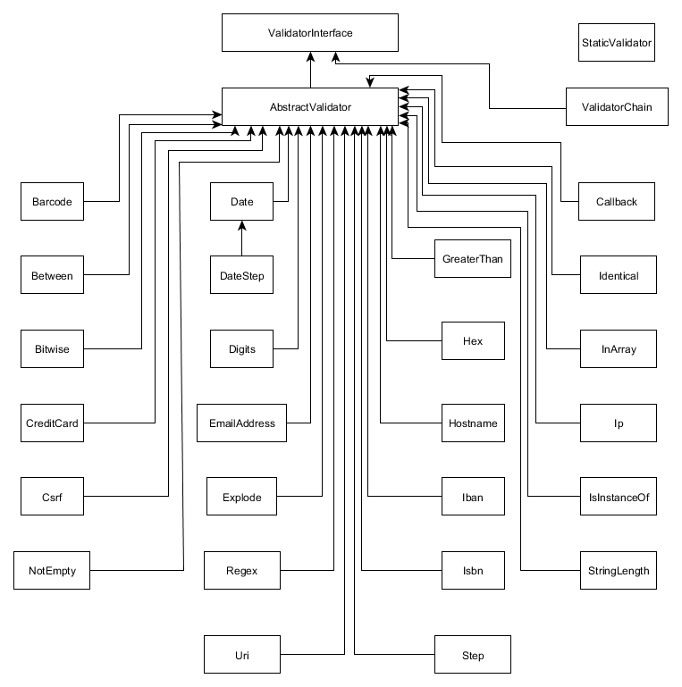
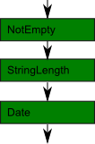
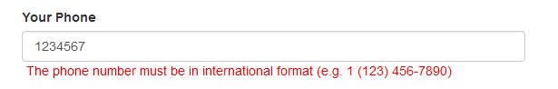

Checking Input Data with Validators
In this chapter, we will provide an overview of standard ZF validators that can be used with your forms, and will also show how to write a custom validator. A validator is a class designed to take some input data, check it for correctness, and return a boolean result telling whether the data is correct (and error messages if the data has some errors).
In general, you even can use validators outside forms to process an arbitrary data. For example, validators may be used in a controller action to ensure that data passed as GET and/or POST variables is secure and conform to certain format.
Laminas components covered in this chapter:
| Component | Description |
|---|---|
@Laminas\Validator |
Implements various validator classes. |
@Laminas\InputFilter |
Implements a container for filters/validators. |
About Validators
A validator is designed to take some input data, check it for correctness, and return a boolean result telling whether the data is correct. If the data is incorrect, the validator generates the list of errors describing why the check didn't pass.
ValidatorInterface
In Laminas, a validator is a usual PHP class which implements the @ValidatorInterface[Laminas\Validator\ValidatorInterface]
interface (it belongs to @Laminas\Validator namespace). The interface definition is presented below:
<?php
namespace Laminas\Validator;
interface ValidatorInterface
{
// Returns true if and only if $value meets the validation requirements.
public function isValid($value);
// Returns an array of messages that explain why
// the most recent isValid() call returned false.
public function getMessages();
}
As you can see, the @ValidatorInterface[Laminas\Validator\ValidatorInterface] has two methods: the isValid() method
(line 7) and getMessages() method (line 11).
The first one, isValid() method, is intended to perform the check of the input
value (the $value parameter). If the validation of the $value passes, the
isValid() method returns boolean true. If the $value fails validation, then
this method returns false.
A concrete validator class implementing the @
ValidatorInterface[Laminas\Validator\ValidatorInterface] interface may have additional methods. For example, many validator classes have methods allowing to configure the validator (set validation options).
Standard Validators Overview
Standard Laminas validators are provided by the @Laminas\Validator component 1. Standard validator
classes inheritance is shown in figure 9.1. As you can see from the figure, most of them are derived
from @AbstractValidator base class.

Standard validators together with their brief description are listed in table 9.1. As you may notice from the table, they can be roughly divided into several groups:
- validators for checking value conformance to certain format (IP address, host name, E-mail address, credit card number, etc.);
- validators for checking if a numerical value lies in a given range (less than, greater than, between, etc.);
- validators working as "proxies" to other validators (@
ValidatorChain[Laminas\Validator\ValidatorChain], @StaticValidatorand @Callback[Laminas\Validator\Callback]).
| Class name | Description |
|---|---|
@EmailAddress[Laminas\Validator\EmailAddress] |
Returns boolean true if the value is a valid E-mail address; otherwise returns false. |
@Hostname[Laminas\Validator\Hostname] |
Checks whether the value is a valid host name. |
@Barcode[Laminas\Validator\Barcode] |
Returns boolean true if and only if the value contains a valid barcode. |
@CreditCard |
Returns true if and only if the value follows the common format of credit card number (Luhn algorithm, mod-10 checksum). |
@Iban |
Returns true if the value is a valid International Bank Account Number (IBAN); otherwise returns false. |
@Isbn |
Returns boolean true if and only if value is a valid International Standard Book Number (ISBN). |
@Ip |
Returns true if value is a valid IP address; otherwise returns false. |
@Uri[Laminas\Validator\Uri] |
Returns true if and only if the value is an Uniform Resource Identifier (URI). |
@Between[Laminas\Validator\Between] |
Returns true if the value lies in certain range; otherwise returns false. |
@LessThan |
Returns boolean true if the value is less than certain number; otherwise returns false. |
@GreaterThan |
Returns true if and only if value is greater than certain number. |
@Identical |
Returns boolean true if the value matches a given token. |
@Step |
Checks whether the value is a scalar and a valid step value. |
@Csrf[Laminas\Validator\Csrf] |
This validator checks if the provided token matches the one previously generated and stored in a PHP session. |
@Date[Laminas\Validator\Date] |
Returns true if value is a valid date of the certain format. |
@DateStep |
Returns boolean true if a date is within a valid step. |
@InArray |
Returns true if value is contained in the given array; otherwise returns false. |
@Digits[Laminas\Validator\Digits] |
Returns boolean true if and only if $value only contains digit characters. |
@Hex |
Returns true if and only if value contains only hexadecimal digit characters. |
@IsInstanceOf |
Returns true if value is instance of certain class; otherwise returns false. |
@NotEmpty |
Returns true if value is not an empty value. |
@Regex[Laminas\Validator\Regex] |
Returns true if value matches against given pattern; otherwise returns false. |
@StringLength |
Returns true if the string length lies within given range. |
@Explode |
Splits the given value in parts and returns true if all parts pass the given check. |
@StaticValidator |
This validator allows to execute another validator without explicitly instantiating it. |
@Callback[Laminas\Validator\Callback] |
This validator allows to execute a custom validation algorithm through the user-provided callback function. |
@ValidatorChain[Laminas\Validator\ValidatorChain] |
Wrapper validator allowing to organize several validators in a chain. Attached validators are run in the order in which they were added to the chain (FIFO). |
Table 9.1. Standard validators
Validator Behaviour in Case of Invalid or Unacceptable Data
If you pass a validator some data that doesn't pass the check, the validator
internally creates the list of error messages that can be retrieved with the getMessages() method.
For example, look below for possible validation errors that the @EmailAdrress[Laminas\Validator\EmailAddress]
returns if you pass it the "abc@ewr" value (the back-slash ('\') character indicates line breaks where
code doesn't fit book page):
array(3) {
["emailAddressInvalidHostname"] =>
string(51) "'ewr' is not a valid hostname for the email address"
["hostnameInvalidHostname"] =>
string(66) "The input does not match the expected structure for a DNS hostname"
["hostnameLocalNameNotAllowed"] =>
string(84) "The input appears to be a local network name but local network names are not allowed"
}
Validator's getMessages() method will return an array of messages that explain why the validation failed.
The array keys are validation failure message identifiers, and the array values are the corresponding
human-readable message strings.
If isValid() method was never called or if the most recent isValid() call
returned true, then the getMessages() method returns an empty array. Also, when you call isValid() several
times, the previous validation messages are cleared, so you see only validation errors from the last
call.
Some validators may work with input data in certain format only (for example, a validator may require
that the input data be a string, but not an array). If you pass it data in unacceptable format,
the validator may throw an @Laminas\Validator\Exception\RuntimeException exception or raise a PHP warning.
It is recommended to check certain validator's documentation to be aware of its actual behaviour in case of inacceptable data.
Instantiating a Validator
In Laminas Framework, there are several methods of creating a validator:
- instantiating it manually (with the
newoperator); - creating it with a factory class (by passing an array configuration); this way is used the most frequently when adding validation rules in a form;
- instantiating it implicitly with the @
StaticValidatorwrapper class.
Next, we will cover these three methods in more details.
Method 1. Manual Instantiation of a Validator
A validator in general can be used not only with forms, but also for validation
of an arbitrary data. In order to do that, you simply create an instance of the
validator class, configure the validator by using the methods it provides, and
call the isValid() method on the validator.
For example, let's consider the usage of the @EmailAddress validator which checks
an E-mail address for conformance to RFC-2822 standard.
An E-mail address typically consists of the local part (user name)
followed by the "at" character (@), which is in turn followed by the host name. For example,
in the "name@example.com" E-mail address, "name" is the local part, and "example.com" is the host name.
The @
EmailAddressvalidator is useful for checking an user-entered E-mail addresses on your forms for correctness. The validator will check for the correctness of the local part and the host name, for presence of the "at" character (@) and, optionally, will connect to the recipient's host and query the DNS service for existence of the MX (Mail Exchanger) record 2.
The methods provided by the @EmailAddress validator are listed in table 9.2:
| Method name | Description |
|---|---|
__construct($options) |
Constructs the validator. Accepts the list of options allowing to configure it. |
isValid($value) |
Returns true if the value is a valid E-mail address according to RFC-2822; otherwise returns false. |
getMessages() |
If validation failed, this method will return an array of error messages. |
useDomainCheck($domain) |
Tells the validator to check the host name part for correctness. |
getDomainCheck() |
Returns true if host name part check is enabled. |
setHostnameValidator($hostnameValidator) |
Attaches the validator to use for checking host name part of the E-mail address. |
getHostnameValidator() |
Returns the validator used for checking host name part of the E-mail address. |
setAllow($allow) |
Sets the allowed types of host names to be used in an E-mail address. |
getAllow() |
Returns the allowed types of host names. |
useMxCheck($mx) |
Sets whether to perform the check for a valid MX record via DNS service. |
getMxCheck($mx) |
Returns true if MX check mode is enabled. |
useDeepMxCheck($deep) |
Sets whether to use deep validation for MX records. |
getDeepMxCheck() |
Returns true if the deep MX check mode is enabled; otherwise returns false. |
isMxSupported() |
Returns true if MX checking via getmxrr() PHP function is supported in the system; otherwise returns false. |
getMXRecord() |
After validation, returns the found MX record information. |
Table 9.2. Public methods of the EmailAddress validator
As you can see from the table, the @EmailAddress validator, additionally to the
isValid() and getMessages() methods, provides the constructor method to which
you can (optionally) pass the complete list of options for initializing the validator.
All standard validators have the constructor method (optionally) accepting an array of options for configuring the validator when instantiating it manually.
The @EmailAddress class also provides a number of methods that can be used for
setting specific validator options.
The useDomainCheck() method tells whether to check the host name for correctness, or not.
By default, this check is enabled. The setAllow() method provides an ability to specify
which types of host names are allowed. You can pass an OR combination
of the ALLOW_-prefixed constants 3 to the setAllow() method:
ALLOW_DNSAllow a domain name (this is the default),IP_ADDRESSAllow an IP address,ALLOW_LOCALAllow local network name,ALLOW_ALLAllow all of the above.
Internally, the @
EmailAddressvalidator uses the @Hostname[Laminas\Validator\Hostname] validator for checking the host name part of an E-mail address. Optionally, you can attach a custom host name validator by using thesetHostnameValidator()method, however it is unlikely you will need to do such.
The useMxCheck() method tells whether the validator should connect to the recipient's
host and query the DNS server for the MX record(s). If the server has no MX records, than the validation fails.
You can additionally use the useDeepMxCheck() method to tell the validator to compare the mail
server addresses extracted from the MX records against the black list of reserved domain names, and perform
additional checks per each detected address.
It is not recommended to perform MX check (and deep MX check), because that may take a lot of time and increase the web page load time. By default, these checks are disabled.
Below, we provide code examples showing two equivalent methods of manual creating of an instance of
the @EmailAddress validator, setting its options and checking an input value:
Example 1. Passing options to the constructor method.
<?php
// Optionally, define a short alias for the validator class name.
use Laminas\Validator\EmailAddress;
use Laminas\Validator\Hostname;
// Create an instance of the validator, passing options to the constructor.
$validator = new EmailAddress([
'allow' => Hostname::ALLOW_DNS|Hostname::ALLOW_IP|Hostname::ALLOW_LOCAL,
'mxCheck' => true,
'deepMxCheck' => true
]);
// Validate an E-mail address.
$isValid = $validator->isValid('name@example.com'); // Returns true.
$isValid2 = $validator->isValid('abc'); // Returns false.
if(!$isValid2) {
// Get error messages in case of validation failure.
$errors = $validator->getMessages();
}
In the code above, we create the @EmailAddress validator object with the help of the new operator (line 7).
We pass the array of options to the constructor. We use the allow key to allow an
E-mail address to be a domain name, an IP address or local network address. Also, we use
the mxCheck and deepMxCheck to enable MX record check and deep MX record
check, respectively.
In line 14, we call the isValid() method and pass it the string value "name@example.com"
to be checked. The expected output of this call is the boolean true.
In line 15, we pass the "abc" string value to the validator. The validation procedure
is expected to fail (false is returned). Then, the error messages are retrieved with
the getMessages() method (line 19).
Example 2. Without passing options to the constructor.
<?php
// Optionally, define a short alias for the validator class name.
use Laminas\Validator\EmailAddress;
use Laminas\Validator\Hostname;
// Create an instance of the validator.
$validator = new EmailAddress();
// Optionally, configure the validator
$validator->setAllow(
Hostname::ALLOW_DNS|Hostname::ALLOW_IP|Hostname::ALLOW_LOCAL);
$validator->useMxCheck(true);
$validator->useDeepMxCheck(true);
// Validate an E-mail address.
$isValid = $validator->isValid('name@example.com'); // Returns true.
$isValid2 = $validator->isValid('abc'); // Returns false.
if(!$isValid2) {
// Get error messages in case of validation failure.
$errors = $validator->getMessages();
}
In the code above, we create the @EmailAddress validator object with the help of
the new operator (line 7).
In lines 10-13, we configure the validator. We call the setAllow() method to allow an
E-mail address to be a domain name, an IP address or local network address. Also, we use
the useMxCheck() and useDeepMxCheck() to enable MX record check and deep MX record
check, respectively.
In line 16, we call the isValid() method and pass it the string value "name@example.com"
to be checked. The expected output of this call is the boolean true.
In line 17, we pass the "abc" string value to the validator. The validation procedure
is expected to fail. Then, the error messages are retrieved with the getMessages() method (line 21).
Method 2. Using StaticValidator Wrapper
An alternative way of manual validator instantiation is by using the @StaticValidator class.
The @StaticValidator class is some kind of a "proxy" designed for automatic validator
instantiation, configuration and execution. For example, let's consider how to create
the same @EmailAddress validator, configure it and call its isValid() method:
<?php
// Create and execute the EmailAddress validator through StaticValidator proxy.
$validatedValue = \Laminas\Validator\StaticValidator::execute('name@example.com',
'EmailAddress',
[
'allow' =>
Hostname::ALLOW_DNS|
Hostname::ALLOW_IP|
Hostname::ALLOW_LOCAL,
'mxCheck' => true,
'deepMxCheck' => true
]);
// The expected output is boolean true.
The @StaticValidator class provides the execute() static method which takes three
arguments: the input value, the name of the filter to apply, and the array of
filter-specific options.
In line 3, we call the execute() method to automatically create the @EmailAddress
validator, call its setAllowDns(), useMxCheck() and useDeepMxCheck() methods,
and pass the input value to its isValid() method. This is very useful, because
can be accomplished in a single call.
The @
StaticValidatordoesn't provide an ability to extract the list of human-readable validation errors. However, since the @StaticValidatoris designed to be used outside forms, and not intended for displaying results to a human, this seems to be not a big disadvantage.
Method 3. Using an Array Configuration
When using validators with form's validation rules, you typically do not construct a validator object explicitly as we did in the previous section, instead you pass an array configuration to the factory class which automatically constructs the validator for you and (optionally) configures it. We already saw how this works when adding validation rules for the feedback form in Collecting User Input with Forms.
For example, let's show how to construct the same @EmailAddress filter with the help
of the factory:
<?php
// It is assumed that you call the following code inside of the form model's
// addInputFilter() method.
$inputFilter->add([
// ...
'validators' => [
[
'name' => 'EmailAddress',
'options' => [
'allow' => \Laminas\Validator\Hostname::ALLOW_DNS,
'useMxCheck' => false,
'useDeepMxCheck' => false,
],
],
],
// ...
]);
In the code above, we call the add() method provided by the @InputFilter[Laminas\InputFilter\InputFilter] container class (line 5).
The add() method takes an array which has the validators key. You typically register the validators
under that key (line 7). Validators registered under that key are inserted into validator chain in the order
they appear in the list.
A validator configuration typically consists of the name (line 9) and options (line 10). The name
is a fully qualified validator class name (e.g. @\Laminas\Validator\EmailAddress) or its short alias (@EmailAddress).
The options is an array consisting of validator-specific options. When the factory class instantiates
the validator, it passes the list of options to the validator's constructor, and the constructor initializes
the validator as needed.
About Validator Plugin Manager
When creating a validator with a factory, you can use either the fully qualified validator class
name or its short alias. The short aliases for the standard validators are defined by the
@ValidatorPluginManager class.
The @
ValidatorPluginManagerclass defines validator aliases.
A standard validator's alias is typically the same as class name. For example, the class
@Laminas\Validator\EmailAddress has the short alias @EmailAddress.
The validator plugin manager is internally used by the @InputFilter[Laminas\InputFilter\InputFilter] container class for
instantiating the standard validators.
Validator Usage Examples
Next, we will consider the usage of the most important standard validators. These describe the methods (and options) a validator has, and provide a code example showing how to instantiate and apply the validator to input data.
Validators for Checking Value Conformance to Certain Format
In this section, we will consider usage examples of the validators from the group of validators designed for checking if input value conforms to certain format.
Ip Validator
The @Ip validator class is designed to check if the input value is a valid IP address. If the input value
is an IPv4 4 address, IPv6 5 address, IPvFuture 6
address, or IPv6 literal 7 address, the validator returns boolean true; otherwise
it returns false. On failure, error messages can be extracted with the validator's getMessages() method.
Public methods provided by the @Ip validator are listed in table 9.3:
| Method name | Description |
|---|---|
__construct($options) |
Constructs the validator. Accepts the list of options. |
isValid($value) |
Returns true if and only if value is a valid IP address. |
getMessages() |
If validation failed, this method will return an array of error messages. |
setOptions($options) |
Sets validator options. |
Table 9.3. Public methods of the Ip validator
The setOptions() method provides an ability to set allowed types of IP addresses:
allowipv4to allow IPv4 addresses;allowipv6to allow IPv6 addresses;allowipvfutureto allow IPvFuture addresses;allowliteralto allow IPv6 literal addresses.
By default all the above are allowed, except the IPv6 literal address.
Below, a code example demonstrating the usage of the @Ip validator is provided.
<?php
use Laminas\Validator\Ip;
// Create Ip validator.
$validator = new Ip();
// Configure the validator.
$validator->setOptions([
'allowipv4' => true, // Allow IPv4 addresses.
'allowipv6' => true, // Allow IPv6 addresses.
'allowipvfuture' => false, // Allow IPvFuture addresses.
'allowliteral' => true, // Allow IP addresses in literal format.
]);
// Check if input value is a valid IP address (IPv4).
$isValid = $validator->isValid('192.168.56.101'); // Returns true
// Check if input value is a valid IP address (IPv6).
$isValid2 = $validator->isValid(
'2001:0db8:85a3:0000:0000:8a2e:0370:7334'); // Returns true
// Pass an invalid string (not containing an IP address).
$isValid3 = $validator->isValid('abc'); // Returns false
Hostname Validator
The @Hostname[Laminas\Validator\Hostname] validator is designed to check if a given value is a host name belonging to set of
allowed host name types. The types are:
- a DNS Hostname (e.g. "example.com");
- an IP address (e.g. "192.168.56.101");
- a local host name (e.g. "localhost").
The public methods provided by the validator are listed in table 9.4:
| Method name | Description |
|---|---|
__construct($options) |
Constructs the validator. Accepts the list of options. |
isValid($value) |
Returns true when the value is a valid host name; otherwise returns false. |
getMessages() |
If validation failed, this method will return an array of error messages. |
setIpValidator($ipValidator) |
Optionally, allows to set own IP address validator. |
getIpValidator() |
Retrieves attached IP address validator. |
setAllow() |
Defines the type(s) of host names which are allowed. |
getAllow() |
Returns allowed host names types. |
useIdnCheck() |
Defines if Internationalized Domain Names (IDN) check is enabled. This option defaults to true. |
getIdnCheck() |
Returns true if IDN check is enabled. |
useTldCheck() |
Defines if Top Level Domain (TLD) check is enabled. This option defaults to true. |
getTldCheck() |
Returns true if TLD check is enabled. |
Table 9.4. Public methods of the Hostname validator
You can set which host name types are allowed with the setAllow() method. It accepts
a combination of the following constants:
ALLOW_DNSAllows Internet domain names (e.g., example.com);ALLOW_IPAllows IP addresses;ALLOW_LOCALAllows local network names (e.g., localhost, www.localdomain);ALLOW_URIAllows URI host names.ALLOW_ALLAllows all types of host names.
By default, only Internet domain names are allowed.
The host name check consists of several stages, some of which may be omitted based on validator options:
-
If the input value looks like an IP address, it is checked with the internal IP address validator. You can override which IP address validator to use for this by the
setIpValidator()method. -
The host name is separated into domain parts (separated with dot "." character).
-
The top-level domain is checked against the white list of available TLDs. (You can disable this check with the
useTldCheck()method.) -
Each domain part is checked based on the rules for acceptable domain names. If a domain name is an IDN 8, it is checked against the rules for valid IDNs. (You can disable IDN check with
useIdnCheck()method.)
Below, a code example demonstrating the usage of the @Hostname[Laminas\Validator\Hostname] validator is provided.
<?php
use Laminas\Validator\Hostname;
// Create the Hostname validator.
$validator = new Hostname();
// Configure the validator.
$validator->setAllow(Hostname::ALLOW_DNS|Hostname::ALLOW_IP);
// Check a host name.
$isValid = $validator->isValid('site1.example.com');
// Returns true.
$isValid2 = $validator->isValid('abc');
// Returns false (not a valid host name).
Uri Validator
The @Uri[Laminas\Validator\Uri] validator is designed to check whether the input value is a
Uniform Resource Identifier (URI) 9. On failure, error messages can be
extracted with the validator's getMessages() method.
Don't be confused with the term URI. In most cases, you may think of URI as of a usual URL.
The public methods provided by the @Uri[Laminas\Validator\Uri] validator are listed in table 9.5:
| Method name | Description |
|---|---|
__construct($options) |
Constructs the validator. Accepts the list of options. |
isValid($value) |
Returns true when the value is a valid URI; otherwise returns false. |
getMessages() |
If validation failed, this method will return an array of error messages. |
setUriHandler($uriHandler) |
Sets the URI handler object for this validator. |
getUriHandler() |
Retrieves the URI handler object. |
setAllowAbsolute($allowAbsolute) |
Tells the validator whether absolute URIs are accepted. |
getAllowAbsolute() |
Returns true if absolute URIs are accepted. |
setAllowRelative($allowRelative) |
Tells the validator whether relative URIs are accepted. |
getAllowRelative() |
Returns true if relative URIs are accepted. |
Table 9.5. Public methods of the Uri validator
Internally, the @Uri[Laminas\Validator\Uri] validator uses so called URI handler object, which is responsible for
parsing an URI string. By default, @Laminas\Uri\Uri class is used as the URI handler. (You can set your
custom URI handler with the setUriHandler() method, if you wish.)
An URI can be absolute or relative. For example, an absolute URI is "http://example.com/blog/2014/02/02/edit", while
a relative URI is "2014/02/02/edit". You can specify whether the validator should consider absolute and/or relative
URIs acceptable. For that, you use the setAllowAbsolute() and setAllowRelative() methods, respectively. By default,
both are treated as acceptable URI types.
Below, a code example demonstrating the usage of the @Uri[Laminas\Validator\Uri] validator is provided.
<?php
use Laminas\Validator\Uri;
// Create the Uri validator.
$validator = new Uri();
// Configure the validator.
$validator->setAllowAbsolute(true);
$validator->setAllowRelative(true);
// Check an URI.
$isValid = $validator->isValid('http://site1.example.com/application/index/index');
// Returns true.
$isValid2 = $validator->isValid('index/index');
// Returns true.
Date Validator
The @Date[Laminas\Validator\Date] validator is intended for checking whether the input data is a date
in a given format. On failure, error messages can be extracted with the validator's
getMessages() method.
Public methods provided by the @Date[Laminas\Validator\Date] validator are listed in table 9.6:
| Method name | Description |
|---|---|
__construct($options) |
Constructs the validator. Accepts the list of options. |
isValid($value) |
Returns true when the value is a string containing a date in expected format; otherwise returns false. |
getMessages() |
If validation failed, this method will return an array of error messages. |
setFormat($format) |
Sets an acceptable date format. |
getFormat() |
Retrieves the expected format. |
Table 9.6. Public methods of the Date validator
To set the expected date format, you can use the setFormat() method.
Internally, the @
DateTimeFormatterfilter uses theDateTimeclass from the PHP standard library for converting and formatting dates. For available date formats, please refer to the PHP documentation for theDateTimeclass.
Below, a code example demonstrating the usage of the @Date[Laminas\Validator\Date] validator is provided.
<?php
use Laminas\Validator\Date;
// Create validator instance.
$validator = new Date();
// Configure validator.
$validator->setFormat('Y-m-d');
// Check if the input value is a date having expected format.
$isValid = $validator->isValid('2014-04-04'); // Returns true.
$isValid2 = $validator->isValid('April 04, 2014'); // Returns false (format is unexpected).
Regex Validator
This validator allows you to validate if a given string conforms some regular expression.
It returns true if the string matches the regular expression, otherwise it returns false.
On failure, error messages can be extracted with the validator's
getMessages() method.
The public methods provided by the @Regex[Laminas\Validator\Regex] validator are listed in table 9.7:
| Method name | Description |
|---|---|
__construct($options) |
Constructs the validator. Accepts the list of options. |
isValid($value) |
Returns true if and only if $value matches the given regular expression pattern. |
getMessages() |
If validation failed, this method will return an array of error messages. |
setPattern($pattern) |
Sets the regular expression pattern. |
getPattern() |
Retrieves the regular expression pattern. |
Table 9.7. Public methods of the Regex validator
The setPattern() method allows to set the regular expression to match against.
For regular expressions syntax and examples, it is recommended that your refer to the PCRE Patterns section of the PHP documentation.
Below, a code example demonstrating the usage of the @Regex[Laminas\Validator\Regex] validator is provided. It uses the
regular expression to check if the input string is a valid IPv4 address (such address typically
consists of four groups of digits separated with dots).
<?php
use Laminas\Validator\Regex;
// Create Regex validator.
$validator = new Regex();
// Set regular expression to check for an IP address.
$validator->setPattern('\b\d{1,3}\.\d{1,3}\.\d{1,3}\.\d{1,3}\b');
// Check for regular expression match.
$isValid = $validator->isValid("127.0.0.1"); // returns true.
$isValid2 = $validator->isValid("123"); // returns false.
Validators for Checking if a Numerical Value Lies in a Given Range
In this section, we will consider usage examples of the validators from the group of validators designed for checking if input value lies in a given range.
NotEmpty Validator
The @NotEmpty validator allows to check if input value is not empty. This is often
useful when working with form elements or other user input, where you can use it to
ensure required elements have values associated with them.
The public methods provided by the @NotEmpty validator are listed in table 9.8:
| Method name | Description |
|---|---|
__construct($options) |
Constructs the validator. Accepts the list of options. |
isValid($value) |
Returns true if and only if $value is not an empty value. |
getMessages() |
If validation failed, this method will return an array of error messages. |
setType($type) |
Set the value types that to consider as empty values. |
getType() |
Returns the types. |
getDefaultType() |
Returns the default types. |
Table 9.8. Public methods of the NotEmpty validator
The setType() method specifies which variable types to consider as an empty value. This method accepts the
single argument $type which can be either an OR combination of the constants listed in table 9.9, or an
array containing the literal equivalents of those constants.
| Constant | Numeric Value | Literal Equivalent | Description |
|---|---|---|---|
BOOLEAN |
1 | "boolean" | Consider boolean false as an empty value. |
INTEGER |
2 | "integer" | Consider integer 0 as an empty value. |
FLOAT |
4 | "float" | Consider float 0.0 as an empty value. |
STRING |
8 | "string" | Consider empty string '' as an empty value. |
ZERO |
16 | "zero" | Consider string containing the single character zero ('0') as an empty value. |
EMPTY_ARRAY |
32 | "array" | Consider an empty array as an empty value. |
NULL |
64 | "null" | Consider null as an empty value. |
PHP |
127 | "php" | Consider the value empty if the empty() PHP function would return true on it. |
SPACE |
128 | "space" | Consider a string which contains only white spaces as an empty value. |
OBJECT |
256 | "object" | Returns true. false will be returned when object is not allowed but an object is given. |
OBJECT_STRING |
512 | "objectstring" | Returns false when an object is given and it's __toString() method returns an empty string. |
OBJECT_COUNT |
1024 | "objectcount" | Returns false when an object is given, it has an Countable interface and it's count is 0. |
ALL |
2047 | "all" | Consider all above types as empty values. |
Table 9.9. Type constants
Below, a code example demonstrating the usage of the @NotEmpty validator is provided.
<?php
use Laminas\Validator\NotEmpty;
// Create validator instance.
$validator = new NotEmpty();
// Configure validator.
$validator->setType(NotEmpty::ALL);
// Check if input value not empty.
$isValid1 = $validator->isValid('some string'); // returns true
$isValid2 = $validator->isValid(''); // returns false
$isValid3 = $validator->isValid(0); // returns false
Between Validator
The @Between[Laminas\Validator\Between] validator checks whether a number lies in a certain range (min, max), either inclusively
(by default) or exclusively.
The public methods provided by the @Between[Laminas\Validator\Between] validator are listed in table 9.10:
| Method name | Description |
|---|---|
__construct($options) |
Constructs the validator. Accepts the list of options. |
isValid($value) |
Returns true if and only if value's length is within the given range. |
getMessages() |
If validation failed, this method will return an array of error messages. |
setMin($min) |
Sets the minimum limit. |
getMin() |
Retrieves the minimum limit. |
setMax($max) |
Sets the maximum limit. |
getMax() |
Retrieves the maximum limit. |
setInclusive($inclusive) |
Sets whether to compare if the value lies in the given boundaries inclusively. |
getInclusive() |
Returns the inclusive option. |
Table 9.10. Public methods of the Between validator
The range can be set with the setMin() and setMax() methods.
By default, the validator performs inclusive comparisons (to check if the value belongs to the given range, it compares if the value
is greater or equal to its lower bound, and if the value is lower or equal to its upper bound). You
can change this with the setInclusive() method. It tells the validator whether to perform inclusive
comparisons (pass true as the argument) or exclusive comparisons (pass false as the argument).
Below, a code example demonstrating the usage of the @Between[Laminas\Validator\Between] validator is provided.
<?php
use Laminas\Validator\Between;
// Create validator instance.
$validator = new Between();
// Configure validator.
$validator->setMin(1);
$validator->setMax(10);
$validator->setInclusive(true);
$isValid1 = $validator->isValid(5); // returns true.
$isValid2 = $validator->isValid(10); // returns true.
$isValid3 = $validator->isValid(0); // returns false (value is too small).
$isValid4 = $validator->isValid(15); // returns false (value is too big).
InArray Validator
The @InArray validator checks whether the input value belongs to the given array of values.
The public methods provided by the @InArray validator are listed in table 9.11:
| Method name | Description |
|---|---|
__construct($options) |
Constructs the validator. Accepts the list of options. |
isValid($value) |
Returns true if and only if value belongs to the given array. |
getMessages() |
If validation failed, this method will return an array of error messages. |
setHaystack($haystack) |
Sets the array to search in. |
getHaystack() |
Returns the array of allowed values. |
setStrict($strict) |
Sets strict comparison mode. |
getStrict() |
Whether strict comparison mode enabled? |
setRecursive($recursive) |
Tells the validator to search recursively. |
getRecursive() |
Whether the recursive search is enabled? |
Table 9.11. Public methods of the InArray validator
The setHaystack() method allows to set the array of allowed values. The isValid() method will
search through this array for the presence of the input $value.
If the array contains nested values and you want to search among them recursively, then use
setRecursive() method. This method takes the single boolean flag. If the flag is true, than
the search will be performed recursively; otherwise the nested levels will be ignored.
The setStrict() method provides an ability to tell the validator how to compare the input value
and the values in array. This may be a combination of the following constants:
COMPARE_NOT_STRICTDo not perform strict check of variable type.COMPARE_NOT_STRICT_AND_PREVENT_STR_TO_INT_VULNERABILITYDo not perform strict check of variable type, but prevent false positive comparisons of string to integer (e.g."asdf" == 0). This is the default option.COMPARE_STRICTCheck both variable type and value.
Below, a code example demonstrating the usage of the @InArray validator is provided.
<?php
use Laminas\Validator\InArray;
// Create validator instance.
$validator = new InArray();
// Configure validator.
$validator->setHaystack([1, 3, 5]);
// Perform validation.
$isValid1 = $validator->isValid(1); // returns true.
$isValid2 = $validator->isValid(2); // returns false.
StringLength Validator
The @StringLength validator checks whether the input string length belongs to the given range, inclusively.
It returns true if and only if the string length of value is at least the min option and
no greater than the max option (when the max option is not null).
The public methods provided by the @StringLength validator are listed in table 9.12:
| Method name | Description |
|---|---|
__construct($options) |
Constructs the validator. Accepts the list of options. |
isValid($value) |
Returns true if and only if value's length is within the given range. |
getMessages() |
If validation failed, this method will return an array of error messages. |
setMin($min) |
Sets the minimum limit. |
getMin() |
Retrieves the minimum limit. |
setMax($max) |
Sets the maximum limit. |
getMax() |
Retrieves the maximum limit. |
setEncoding($encoding) |
Sets a new encoding to use. |
getEncoding() |
Retrieves the encoding. |
Table 9.12. Public methods of the StringLength validator
By default, the @StringLength validator considers any string length as valid.
Use the setMin() and/or setMax() methods to set lower and upper limits for the allowable string
length. There are three possible ways you can do that:
- Use only the
setMin()method to allow strings with a lower-bound minimum length, but unbound upper length; - Use only the
setMax()method to allow strings with zero minimum length and an upper-bound maximum length; - Use both the
setMin()andsetMax()methods to allow strings with a length laying between the lower and upper bounds.
By default, the PHP engine uses the UTF-8 encoding for strings. If your input string uses a different
encoding, you should specify it encoding with the setEncoding() validator's method.
Below, a code example demonstrating the usage of the @StringLength validator is provided.
<?php
use Laminas\Validator\StringLength;
// Create validator instance.
$validator = new StringLength();
// Configure the validator.
$validator->setMin(1);
$validator->setMax(10);
$isValid1 = $validator->isValid("string"); // returns true.
$isValid2 = $validator->isValid(""); // returns false (value is too short).
$isValid3 = $validator->isValid("a very long string"); // returns false (value is too long).
Organizing Validators in a Chain
Validators can be organized in a sequence. This is accomplished by the @ValidatorChain[Laminas\Validator\ValidatorChain] class. When
such a compound validator is run, the input value is passed to all validators in turn. The
@ValidatorChain[Laminas\Validator\ValidatorChain] validator's isValid() method returns true if all validators in the chain return
true; otherwise it returns false.
The @
ValidatorChain[Laminas\Validator\ValidatorChain] class is internally used by the @InputFilter[Laminas\InputFilter\InputFilter] container class for storing the sequence of validators attached to a form model's field.
Public methods provided by the @ValidatorChain[Laminas\Validator\ValidatorChain] class are presented in table 9.13:
| Method name | Description |
|---|---|
isValid($value) |
Returns true if all validators in the chain return true. |
getMessages() |
Returns the array of validation error messages. |
getValidators() |
Returns the array of validators in the chain. |
count() |
Returns count of validators in the chain. |
attach($validator, $breakChainOnFailure) |
Attaches a validator to the end of the chain. |
prependValidator($validator, $breakChainOnFailure) |
Adds a validator to the beginning of the chain. |
attachByName($name, $options, $breakChainOnFailure) |
Use the plugin manager to add a validator by name. |
prependByName($name, $options, $breakChainOnFailure) |
Use the plugin manager to prepend a validator by name. |
merge($validatorChain) |
Merge the validator chain with the one given in parameter. |
Table 9.13. Public methods of the ValidatorChain validator
An example validator chain is shown in figure 9.2. It consists of the @NotEmpty validator followed by
the @StringLength validator, which in turn is followed by the @Date[Laminas\Validator\Date] validator. When this chain is
executed, first, the @NotEmpty validator is run checking that the value is a non-empty value, then
the @StringLength validator is run checking that the length of the input string belongs to range (1, 16), inclusively,
and finally, the @Date[Laminas\Validator\Date] validator is run checking that the input value is a date in format "YYYY-MM-DD".

To construct the filter chain like in figure 9.2, we can use the following code:
<?php
// Instantiate the validator chain.
$validator = new \Laminas\Validator\ValidatorChain();
// Insert validators into validator chain.
$validator->attachByName('NotEmpty');
$validator->attachByName('StringLength', ['min'=>1, 'max'=>16]);
$validator->attachByName('Date', ['format'=>'Y-m-d']);
// Execute all validators in the chain.
$isValid = $validator->isValid('2014-04-04'); // Returns true.
Custom Validation with the Callback Validator
The @Callback[Laminas\Validator\Callback] validator can be a wrapper for your custom validation algorithm. For example, this may
be useful when a standard validator is not suitable, and you need to apply your own checking
algorithm to the data. The public methods provided by the @Callback[Laminas\Validator\Callback] validator are listed in table 9.14.
| Class name | Description |
|---|---|
isValid($value, $context) |
Executes a callback function as a validator. |
getMessages() |
If validation failed, this method will return an array of error messages. |
setCallback($callback) |
Sets a new callback for this filter. |
getCallback() |
Returns callback set for the filter. |
setCallbackOptions($options) |
Sets options for the callback. |
getCallbackOptions() |
Get parameters for the callback. |
Table 9.14. Public methods of the Callback validator
As you can see from the table, the @Callback[Laminas\Validator\Callback] validator provides the setCallback() and setCallbackOptions()
methods that can be used to set the callback function or class method and (optionally) pass it one or several
parameters.
Example
To demonstrate the usage of the @Callback[Laminas\Validator\Callback] validator, let's add the phone number validator
to our ContactForm form model class. The validator would check a telephone number entered by site
visitor.
The validator needs to be able to check for two common phone number formats:
- international format looking like "1 (234) 567-8901";
- and local format, which looks like "567-8901".
Because Laminas does not provide a standard validator for accomplishing such phone filtering operation,
we will use the @Callback[Laminas\Validator\Callback] wrapper validator. To do that, we will make the following
changes to the code of our ContactForm class:
<?php
// ...
class ContactForm extends Form
{
// ..
protected function addElements() {
// ...
// Add "phone" field
$this->add([
'type' => 'text',
'name' => 'phone',
'attributes' => [
'id' => 'phone'
],
'options' => [
'label' => 'Your Phone',
],
]);
}
private function addInputFilter()
{
// ...
$inputFilter->add([
'name' => 'phone',
'required' => true,
'validators' => [
[
'name' => 'Callback',
'options' => [
'callback' => [$this, 'validatePhone'],
'callbackOptions' => [
'format' => 'intl'
]
]
]
]
);
}
// Custom validator for a phone number.
public function validatePhone($value, $context, $format)
{
// Determine the correct length and pattern of the phone number,
// depending on the format.
if($format == 'intl') {
$correctLength = 16;
$pattern = '/^\d\ (\d{3}\) \d{3}-\d{4}$/';
} else { // 'local'
$correctLength = 8;
$pattern = '/^\d{3}-\d{4}$/';
}
// Check phone number length.
if(strlen($value)!=$correctLength)
return false;
// Check if the value matches the pattern.
$matchCount = preg_match($pattern, $value);
return ($matchCount!=0)?true:false;
}
}
In the code above, we create the phone field in our ContactForm
(if you already have such field, just ignore this).
In lines 26-40, we add the @Callback[Laminas\Validator\Callback] validator to the input filter's
validator chain for the "phone" field.
In lines 44-64, we have the validatePhone() callback method. The method accepts three
arguments: the $value parameter is the phone number to validate, the $context parameter receives
the values of every field of the form (it may be needed for some validators to refer to the values of other form fields, too);
and the $format parameter is the expected format of the phone number ("intl" or "local").
Inside of the callback method, we do the following:
- Calculate the correct length of the phone, check whether the length is correct for the selected phone number format.
- Match the phone number against the regular expression pattern for the selected phone format.
Writing Own Validator
An alternative of using the @Callback[Laminas\Validator\Callback] validator is writing your own validator class
implementing the @ValidatorInterface[Laminas\Validator\ValidatorInterface] interface. Then, this validator may be used in
forms of your web application.
To demonstrate how to create your own validator, we will write the PhoneValidator class encapsulating
the phone validation algorithm we used with the @Callback[Laminas\Validator\Callback] validator example.
As you might remember, the base concrete class for all standard validators is the @
AbstractValidatorclass. By analogy, we will also derive our customPhoneValidatorvalidator from that base class.
We plan to have the following methods in our PhoneValidator validator class (see table 9.15):
| Method name | Description |
|---|---|
__construct($options) |
Constructor. Accepts an optional argument $options which is needed to set validator options at once. |
setFormat($format) |
Sets the phone format option. |
getFormat() |
Returns the phone format option. |
isValid($value) |
Returns true when the value is a valid phone number; otherwise returns false. |
getMessages() |
If validation failed, this method will return an array of error messages. |
Table 9.15. Public methods of the Callback validator
For the PhoneValidator, we will have three possible error messages:
- If a non-scalar value is passed to the validator, it will generate the error message "The phone number must be a scalar value";
- If the international phone format is selected, and the phone number entered doesn't match this format, the validator will generate the message "The phone number must be in international format";
- If the local phone format is selected and the phone number entered doesn't match the format, the validator will generate the message "The phone number must be in local format".
To start, create the PhoneValidator.php file in the Validator directory under the module's source directory 10. Put the following code into that file:
<?php
namespace Application\Validator;
use Laminas\Validator\AbstractValidator;
// This validator class is designed for checking a phone number for
// conformance to the local or to the international format.
class PhoneValidator extends AbstractValidator
{
// Phone format constants.
const PHONE_FORMAT_LOCAL = 'local'; // Local phone format.
const PHONE_FORMAT_INTL = 'intl'; // International phone format.
// Available validator options.
protected $options = [
'format' => self::PHONE_FORMAT_INTL
];
// Validation failure message IDs.
const NOT_SCALAR = 'notScalar';
const INVALID_FORMAT_INTL = 'invalidFormatIntl';
const INVALID_FORMAT_LOCAL = 'invalidFormatLocal';
// Validation failure messages.
protected $messageTemplates = [
self::NOT_SCALAR => "The phone number must be a scalar value",
self::INVALID_FORMAT_INTL => "The phone number must be in international format",
self::INVALID_FORMAT_LOCAL => "The phone number must be in local format",
];
// Constructor.
public function __construct($options = null)
{
// Set filter options (if provided).
if(is_array($options)) {
if(isset($options['format']))
$this->setFormat($options['format']);
}
// Call the parent class constructor.
parent::__construct($options);
}
// Sets phone format.
public function setFormat($format)
{
// Check input argument.
if($format!=self::PHONE_FORMAT_LOCAL &&
$format!=self::PHONE_FORMAT_INTL) {
throw new \Exception('Invalid format argument passed.');
}
$this->options['format'] = $format;
}
// Validates a phone number.
public function isValid($value)
{
if(!is_scalar($value)) {
$this->error(self::NOT_SCALAR);
return false; // Phone number must be a scalar.
}
// Convert the value to string.
$value = (string)$value;
$format = $this->options['format'];
// Determine the correct length and pattern of the phone number,
// depending on the format.
if($format == self::PHONE_FORMAT_INTL) {
$correctLength = 16;
$pattern = '/^\d \(\d{3}\) \d{3}-\d{4}$/';
} else { // self::PHONE_FORMAT_LOCAL
$correctLength = 8;
$pattern = '/^\d{3}-\d{4}$/';
}
// First check phone number length
$isValid = false;
if(strlen($value)==$correctLength) {
// Check if the value matches the pattern.
if(preg_match($pattern, $value))
$isValid = true;
}
// If there was an error, set error message.
if(!$isValid) {
if($format==self::PHONE_FORMAT_INTL)
$this->error(self::INVALID_FORMAT_INTL);
else
$this->error(self::INVALID_FORMAT_LOCAL);
}
// Return validation result.
return $isValid;
}
}
From line 2, you can see that the validator class lives in the Application\Validator namespace.
In line 8, we define the PhoneValidator class. We derive our validator class from
the AbstractValidator base class to reuse the functionality it provides. Line 4 contains
the short alias for the @AbstractValidator class.
In lines 11-12, for convenience, we define the phone format constants (PHONE_FORMAT_INTL for
international format and PHONE_FORMAT_LOCAL for local format). These are the equivalents of the
"intl" and "local" strings, respectively.
In lines 15-17, we define the $options private array variable which is an array having the single key
named "format". This key will contain the phone format option for our validator.
In lines 20-22, we define the error message identifiers. We have three identifiers (NOT_SCALAR,
INVALID_FORMAT_INTL and INVALID_FORMAT_LOCAL), because our validator may generate three different
error messages. These identifiers are intended for distinguishing different error messages by machine,
not by human.
In lines 25-29, we have the $messageTemplates array variable that contains mapping before error message
identifiers and their textual representations. The textual messages are intended for displaying to
a human.
In lines 32-43, we have the constructor method which takes the single argument $options.
When constructing the validator manually, you may omit this parameter. But, when the validator is
constructed by the factory class, the factory will pass validation options to validator's constructor
through this argument.
In lines 46-55, we have the setFormat() method that allow to set the current phone format, respectively.
In lines 58-98, we have the isValid() method. This method encapsulates the phone number checking
algorithm. It takes the $value parameter, performs the regular expression match, and returns true
on success.
On failure, the isValid() method it returns the boolean false, and the list of errors can be
retrieved by the getMessages() method.
You might notice that we didn't define the
getMessages()method in ourPhoneValidatorclass. This is because we inherited this method from the @AbstractValidatorbase class. Inside of ourisValid()method, for generating error messages, we also used theerror()protected method provided by the base class (lines 61, 91, 93).The
PhoneValidatoris only for demonstration of how to write custom validators in Laminas. Implementing a validator that will work correctly against all possible phone numbers in the world is beyond the scope of this book. If you'd like to use this validator in a real-life app, you will definitely need to improve it. For example, take a look at thelibphonenumberPHP library from Google.
Using the PhoneValidator Class
When the PhoneValidator validator class is ready, you can easily start using it in the feedback form
(or in another form) as follows. It is assumed that you call the following code inside of the
ContactForm::addInputFilter() method:
$inputFilter->add([
'name' => 'phone',
'required' => true,
'validators' => [
[
[
'name' => PhoneValidator::class,
'options' => [
'format' => PhoneValidator::PHONE_FORMAT_INTL
]
],
],
// ...
],
// ...
]);
You can see how the PhoneValidator validator works in the Form Demo sample application bundled with
this book. Open the "http://localhost/contactus" page in your web browser.
If you enter some phone number in an incorrect format, the validator will display an error (see figure 9.3).

If you wish, you can use the PhoneValidator outside of forms, as shown in code example below:
<?php
use Application\Validator\PhoneValidator;
// Create PhoneValidator validator
$validator = new PhoneValidator();
// Configure the validator.
$validator->setFormat(PhoneValidator::PHONE_FORMAT_INTL);
// Validate a phone number
$isValid = $validator->isValid('1 (234) 567-8901'); // Returns true.
$isValid2 = $validator->isValid('12345678901'); // Returns false.
if(!$isValid2) {
// Get validation errors.
$errors = $validator->getMessages();
}
Using Filters & Validators Outside a Form
In this section, we will provide an example of how you can use filters and/or validators in your controller to transform and check the data extracted from GET and/or POST variables.
Let's assume we implement a payment gateway system and need to create a web page displaying
a payment history for the given credit card on given date. This page can be handled by some
paymentHistoryAction() action of a controller class, and the credit card number and date will
be extracted from GET variables. For the paymentHistoryAction() method,
we need to implement some security checks:
- we want to ensure that the credit card number looks like a typical credit card number "4532-7103-4122-1359" (conforms to ISO/IEC 7812 standard);
- and that the date is in 'YYYY-MM-DD' format.
Below, you can find the code of the action method:
<?php
namespace Application\Controller;
use Laminas\Mvc\Controller\AbstractActionController;
use Laminas\View\Model\ViewModel;
use Laminas\Filter\StaticFilter;
use Laminas\Validator\StaticValidator;
class IndexController extends AbstractActionController
{
// An action which shows the history of a credit
// card operations on certain date.
public function paymentHistoryAction()
{
// Get parameters from GET.
$cardNumber = (string)$this->params()->fromQuery('card', '');
$date = (string)$this->params()->fromQuery('date', date("Y-m-d"));
// Validate credit card number.
$isCardNumberValid = StaticValidator::execute($cardNumber, 'CreditCard');
if(!$isCardNumberValid) {
throw new \Exception('Not a credit card number.');
}
// Convert date to the right format.
$date = StaticFilter::execute($date, 'DateTimeFormatter',
['format'=>'Y-m-d']);
// The rest of action code goes here...
return new ViewModel();
}
}
Inside the action method, we use the params() controller plugin (lines 16-17) to retrieve two
variables from $_GET super-global array: the card variable (credit card number) and the date
variable (the date).
In line 20, we validate the credit card number with the help of the CreditCard validator.
If the card number is not acceptable, we throw an exception indicating an error (line 22).
In line 26, we use the DateTimeFormatter filter to convert the date to the right format.
Summary
Validators are designed to take some input data, check it for correctness, and return a boolean result telling whether the data is correct (and error messages if the data has some errors).
In Laminas Framework, there are several groups of standard validators:
- validators for checking value conformance to certain format;
- validators for checking a numerical value lies in a given range;
- validators working as "proxies" to other validators.
In some cases, a standard validator is not suitable, and you need to apply your own checking
algorithm to the input data. In such case, you may use either the @Callback[Laminas\Validator\Callback] validator or
write your own custom validator class.
-
Here, we only consider the standard validator classes belonging to the @
Laminas\Validatornamespace. But, actually there are more validators that can be considered as standard. We will cover them in further chapters. ↩ -
An MX record is a type of record used in the Domain Name System (DNS). MX records define one or several mail server addresses assigned to recipient's domain. ↩
-
The
ALLOW_-prefixed constants are provided by the @Hostname[Laminas\Validator\Hostname] validator. ↩ -
An Internet Protocol version 4 (IPv4) address typically consists of four octets of the address expressed separated by periods, like "192.168.56.101". ↩
-
An Internet Protocol version 6 (IPv6) address typically consists of eight groups of four hexadecimal digits separated by colons, such as "2001:0db8:85a3:0000:0000:8a2e:0370:7334". ↩
-
IPvFuture is loosely defined in the Section 3.2.2 of RFC 3986. ↩
-
A literal IPv6 address is a modification of a usual IPv6 address for using inside of a URL. (The problem with original IPv6 addresses is that the ":" and "." characters are delimiters in URLs.) ↩
-
An internationalized domain name (IDN) is an Internet domain name that contains at least one label that is displayed, in whole or in part, in a language-specific script or alphabet, like Arabic, Chinese or Russian. ↩
-
A Uniform Resource Identifier (URI) is a compact sequence of characters that identifies an abstract or physical resource. An Uniform Resource Locator (URL) is a type of URI. But, that doesn't mean all URIs are URLs. ↩
-
The
PhoneValidatorclass may be considered as a service model, because its goal is to process data, not to store it. By convention, we store custom validators under theValidatordirectory. ↩